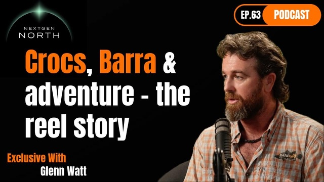

NextGen North
NextGen North #63 — Glenn Watt
Friday 13 March 2026
NextGen North
Friday 13 March 2026


Originally broadcast on NextGen North. Watch on NextGen North.
that day, actually, and that crocodile was a bit of a problem for a couple of weeks there. It was really distinct too, wasn't it? It was quite dangerous because like big enough to really do some damage, but small enough to be really agile. Got pretty close to us a few times, like you saw, but that was at the top of the south alligator there last year.
Yeah. It doesn't happen very often, that sort of thing, but I had a spare bit of pipe there. And yeah, I was just trying to discourage him a bit, I suppose. called the latest generation of guides coming through, doing a lot differently than, say, I did 15 years ago.
A lot of them I see, you know, go out and buy the big flush white boat and it's just all about Instagram and big fish and stuff. But like I just love the adventures side of fishing in the territory and all around the world. I was less obsessed by the big fish stuff and more obsessed by like fun and adventure. Given the opportunity to share that with people is sort of exactly what guiding is.
All right, Glenn, what? Thanks for joining us on the next day North podcast. Thanks for having me, mate. Mate, the 1st time I came across you was last year during the runoff, and for those that don't know what the runoff is, is the main sort of fishing season up here in the Top End, and I pulled my boat up next to yours, you guys were catching a few fish.
I thought, I'd like to get in on this. And I noticed that you had a big stick and you were sort of bashing it into the water and I thought, geez, what's this bloke doing? And then I realised that there was a humungous croc? coming and snatching all the fish that you guys were hooking?
Something tells me that that's just a regular day for you, mate. Well, yeah, I mean, it's that was, I remember that day, actually. And that crocodile was a bit of a problem for a couple of weeks there. That was at the top of the south alligator there last year, yeah.
He was really distinct too, wasn't he? He had a big white mark on it. Was that a scar or something? Yeah, I'm not sure.
It didn't look like a scar to me, and it got pretty close to us a few times, like you saw. But yeah, it doesn't happen very often, that sort of thing, but yeah, I actually had a bit of a landing net malfunction and the end of my landing net had fallen off the handle and drifted off with a fish in it earlier that day. So I had a spare bit of pipe there and yeah, I was just trying to discourage him a bit, I suppose. I don't know whether it was that particular day or not, but I did say to the rangers, oh, you know about that crocodile up there and yeah, surely after that he was gone.
But they'd had numerous reports of him causing problems. He was quite dangerous because like big enough to really do some damage, but small enough to be really agile, wasn't he? Like he'd zip over and jump up and that sort of thing. That's right.
Well, he was, you know, your boat's bigger than mine. Let's just say that. So I was quite nervous in that spot and I just noticed he would just sort of, like he would pop up in one spot and because the water was so clear and so tanning, all you could see was like that white mark going from one fish to the other. which was quite scary because my, you know, I don't have a lot of freeboard compared to yours.
You looked pretty relaxed. You were sort of sitting at the back just, you know, watching clients, but I was a little bit more nervous, I reckon. Yeah, I wouldn't want him to get in with us though. And, you know, he, it wouldn't be out of the realms of possibility if he just sort of got off centre as he lunged for a fish.
So, yeah, I mean, the Kakadu ranges are really good and they're really approachable, so you can get that sort of stuff pretty sort of. They'd already discouraged him in a few different ways. Up until that moment, they told me. But then after that, I never saw him again.
So you might have got some ultimate discouragement. Well, we'll see if, you know, if we go back there, again, this year and he's not there, we might have known. Yeah, that's right. how he met his fate. But anyway, like, I think being a fishing guy must take a certain type of temperament because you're not just battling the wildlife.
you know, you're fighting the elements, you're fighting gear, maintenance issues, dodgy roads, you know, things like that. How does one get into that line of work? Oh, yeah. I mean it's a hell of a lot different to what you see on Instagram, right?
And I think that's one of the things that what I would perhaps call the latest generation of guides coming through are doing a lot differently than, say, oh, I did 15 years ago and the guys that sort of come through within 4 or 5 years of me. And that's that they, a lot of them, I see, you know, go out and buy the big flush white boat and um, and it's just all about Instagram and big fish and stuff, but then it comes down to, you know, you've instantly got to be able to do tax and run a business and marketing and, you know, maintenance and all that, like there's, there's just everything. So, yeah, it's it's something that came pretty naturally to me, though, mate, because I, like, I just love the adventures, um, side of fishing in the territory and all around the world now. But I was less obsessed by the big fish stuff and more obsessed by like fun and adventure.
And given the opportunity to share that with people is sort of exactly what guiding is for me. So, uh, you know, I'm a farm boy from Victoria originally, directly before I was guiding, I was, I was working as a roofer here in Darwin and before that, stations and mine work. So all that maintenance and fixing and that sort of stuff really comes sort of pretty naturally to me. I do enjoy doing that.
But yeah, I mean, it's certainly, it's the temperament to be able to be around people from all walks of life and in all different states of mind and in all different situations that perhaps creates longevity versus not inviting sort of what once you hit that five-year mark, you either really hate everything or you've found your happy place, you know? So, yeah. I'm here after 15 years.
So, wow, so you've got some staying power. I mean, it must take a lot of patience because I guess you would get a lot of maybe not ignorant. That's probably too strong a word, but you get some clients that just would come in and think that the fishing is just going to be hot from the, you know, from the jump and you have to manage that as well as, you know, I'm sure managing other people at the same time, inexperienced fishermen's hooks. you know, that sort of thing flying around.
How do you how do you sort of cope with that? Yeah, you had it all together. It's pretty tricky, right? You can't write like a standard operating procedure for it or the risk matrix in a mind site would say, no way, Jose sort of thing.
So, yeah, I mean, I mean, there's a couple of easy things you can do. is never mixed groups. I learned that early. You know, if you get 2 groups of 2 and you go, oh, we'll put you in as a four, make it a bit cheaper for them and all that sort of stuff.
Really increases the chance of having a clash on the boat and that sort of stuff. When you do half day and one day trips through the harbour and that sort of thing, you're doing that a lot more, but it's, you know, it's less time on the water, people can usually suck it up. But if it's 4 or 5 days, um, there can be clashes, but yeah, I mean, it's, it's really, it really is a people management job. All the other stuff sort of fits in around it. And of course, you've got to be handy at that too.
But yeah, I mean, you've got to be able to talk every different sport, every different religion, every different political issue. And like I just sort of retain a little base level of knowledge for all of those things, without sort of getting too opinionated on it. But, um, yeah, at the same time, you get to meet some really amazing people and I've got guys coming up to fish with me in the next few weeks that have been coming for 10 years. So they become your mates and or the difference is that, you know, they pay for the fuel and everything that they break arrows, taking mates out, as you know, usually you're left on your own.
right. So you said you were from Victoria. Where does your sort of fishing journey begin? Because I think there was a photo that you sent through. I'm assuming it's you and your old man.
that's right. old man. That's on our family farm in Western Victoria. And yeah, a couple of red fin there.
Thats me. I'm probably twoish years old there, I suppose. So my dad is the youngest of his generation, I suppose, on our farm and my grandfather, who was his dad was the youngest of 16 kids and built the house that we still live in down there. pretty strong history, big family.
And yeah, like outdoors, lifestyle, farming and being on the land, fishing and hunting's always been a part of it. So, yeah, it was just Innis. We did a lot of that sort of stuff growing up. We weren't, the water skiing, kids were with the fishing kids on the lake during the summertime. Camping hunting, that sort of thing.
Yeah, that's right. Yeah. Is the family farm still in you? Yeah, still in the field.
Yeah, mom and dad's still there. They retired now, but everything's still there. And, you know, it looks like it'll stay in the family in the next few years, one of our cousins might buy it. And that's sort of, that's really nice for us. Yeah, like the bedroom that I grew up sleeping in is made out of bricks that my grandad made by hand in the creek in the farm. Yeah, I, um, I really like that sort of, that side of family, you know.
And what are you guys farming down there? Oh, well, it always used to be Marino, fine wool sheep until that all sort of collapsed in the 80s, mate. Yeah. And, um, you know, that coincided with 20% interest rates and that sort of thing was a pretty tough time for mum and dad.
I know we lived on cabbage and minced mutton for years when we were kids. It was so hard, but these days, you know, the fat lamb job is so good for all our lamb chops and stuff in the market that that's what dad sort of finished his farming career on. And he was lucky. He got out sort of right at the peak of the market when the meat job was good and the land price were good and was able to, I suppose, retire with a bit of comfort after a bloody hard life on the land, you know.
Yeah, um, full points to them for having a good crack and sticking with it because it would have been hard through the 80s. True Aussie battlers, eh? Yeah, yeah. I mean, you had to.
You had to be back then. And even now, it's not easy. The price of land and all the inputs, especially for cropping. And then you have these really strange weather events all over Australia.
And yeah, it's a it's a stressful job, mate. I used to think, oh, I'll get out of farming so that I don't have to rely on the weather too much, but then here we are, run off fishing that 100% relies on the weather, so you never seem to be able to get away from it. So what was it about the territory that drew here? So obviously being from Victoria, you know, what made you sort of look north and think, geez, I want to get amongst the action up there or, you know, I'm asking about.
Well, it's a pretty straightforward story, really. And I think it's perhaps the same for, or similar for a lot of guys my age where, you know, being, like I said, from a big family who had a lot of uncles and aunties who we all went to Catholic boarding school, and after that, you'd go off in the 70s and they'd go off and work in the missions all the way through the northern territory and Western Australia, even into Queensland, and they came back home, or a few of them did, and, you know, we'd go camping at Easter time, and we'd listen to crocodile stories around the campfire and stuff when we were in primary school. And if you combine that with Rex Hunt, Alby Mangles, Bush Tuckerman, and Leyland Brothers, and whoever else was on telly every Saturday, that was us. Mum and dad made a really big effort too, which I'm sure contributed to us all being spread out all over the world now, that we drove to every capital city in Australia before we finished high school as a family.
Even though we were stone broke. Mum went off and she would do a lot of work outside the farm and I think that gave us that inquisitive nature to go and have a look around and and then for me it was, you know, Barramundi in good weather and and that sense of sort of freedom that we still have here and really enjoy. Yeah. Yeah. So I guess, you know, you said you did a whole bunch of other jobs before you got into guided fishing.
What was that sort of journey? Oh, yeah, I mean, I was pretty unemployable until I got into guiding from a real job point of view. I ended up with an advanced diploma of agriculture through Melbourne Uni at Dookie. Um, and, you know, I was sort of heading down the agronomy sort of path, and, but after 10 years of travelling all over the world, um, and just working here and there for a month or 2 to save a bit of money, not many people really liked the look of me as a long-term prospect.
So, yeah, I ended up as a, um, I was working on Tipperary Station directly before I came back into Darwin and then was roofing and then guiding, but I was a concierge at the Desert Gardens Hotel in Ayres Rock and I've worked in America and England and a little bit in Italy as well, um, all over the world just jumping around having a look around. And I guess having that farming background gave me the ability to adapt to all different sort of stuff. But it largely was, you know, labouring or unskilled sort of stuff, truck driving earth moving mining, that sort of thing. Yeah, so you didn't really have like a set direction or anything like you... I still don't feel like... But, yeah, it was, you know, and you get back to the resume thing.
don't think I really ever had one that was worth looking at because it was always, oh, you've got a mate or you met a bloke at the pub or someone's missus needs some help or whatever it is. So, um, which I really enjoyed and, and, uh, yeah, I couldn't imagine it being any other way for me. It doesn't suit everyone, but for me, it worked really well. So, then how did you get into guided fishing because I think there's a photo here.
I think that you said was your 1st Barramundi. I think it's the one down the bottom there, Tom. Yeah, that's So, well, 1st of all, talk us through this trip, where you're fishing, what you're doing, how old you are, you know, what stage of life you're at.
Yeah, so... That was, I had my 20th year anniversary from that fish last November, actually, in 25. After that photo, the fellow in behind there is another mate from Dookie, and we're in a boat from another mate from Dookie Ad College, Melbourne Uni there, who got a job as a ranger, actually got a real job after we finished. And Dunny was a ranger out at East Alligator for a fair few years, actually. And, you know, we'd fly up for a couple weeks or a week here and there and have a bit of a crack. And yeah, that was the 1st one. And I see so much of of me then in everyone who comes up to Darwin for their 1st barrow now still. I caught that lure, that barrow on a lure that you would never now I would never consider throwing it a barrow, really.
And it wasn't even an Australian lure. It was something I found at the boat, shall we, Melbourne or something, and saw some cool ads on telly for it, catching large-mouth bass in America, and I'll give it a go, you know? And people still do that. So, yeah, there's still that pretty big sort of excited or knowledge gap from 1st one to perhaps even 100th or 20th one.
But yeah, they were good times and I would just go back and, you know, go wool class and drive a truck for a couple months till it got cold in Victoria, and then I'd be off overseas or up north, Broom, Darwin, wherever, and then Christmas time usually come back for the party season and repeat for 10 years after I finished school. yeah. So that was through that period. Good times
And then did someone give you a job guiding as to give you a start or did you just buy a boat and you thought, oh, I think I can do this on my own. Yeah, I did it sort of the old school way, I suppose, which is how you did it back then, and I still would encourage anyone to do it this way, sort of a bit like doing an apprenticeship, right? So I went off with my brother, actually, and we worked on Cannon Charters in 2010 and or was it 11? And yeah, and we did 28 weeks at sea that year.
We were away alone. Blue water, is it? Just remote barrow fishing. mostly.
Yeah, with, you know, elements of blue water and stuff depending on the tides and things. So we spent a lot of time up in the mini, mini, over in the moils and 2 months in the Kimberleys. So, you know, we were really lucky to get that chance. And it was, and it was just through that extended network, you know?
I know someone who knows someone. Oh, there's Crocko over there. We'll go have a beer with him. Oh, what are you doing?
Oh, I'm just doing a bit of roofing for Moyley in Darwin. Oh, dear, do you want to be a fishing guide? Oh sure. Yes, please.
And the next day, you know, he stepped aboard this great big white boat worth 1000000s of dollars and Crocos said, take your shoes off, boys, and not allowed to wear shoes to work, and, you know, all our dreams come true at once. So yeah, that was really good. Was that a big mothership, was it? Yeah, yeah, it's a mothership with 4 small tenders.
Still running. basically out of Darwin. And yeah, it was, I mean, to do 2 months in the Kimberley and sort of get paid for it, even though it wasn't a hell of a lot. And we just like, we had these boats just go off and explore and go fishing.
It was just amazing. And some of the artwork and history and stuff through there. And so, and I mean, it's still the same when you go up to Coburg as well, that same feeling of just adventure and freedom and yeah, that's what keeps me going for sure. So those waters a bit less touched than, say, like your typical, you know, barofishery in the territory.
And does that sort of, I don't know, affect the way you sort of approach barrow fishing, you know, like the different conditions and things like that? You know, how to say like, you know, the mini minis where there's not many people compared to the top of the south where you're going to be all sort of sitting on the top of each other. Oh, I mean, it was actually the ultimate way, I think, to learn to barrow fish. I, like, I didn't even have a pair of long-nosed pliers on the 1st day.
I had a leatherman on me pair on me side and the 1st time we'd ever driven those boats was when we picked the clients up. So we were really green and I certainly wasn't an experienced guide or even catching barrow in salt water. But back then, the mini, mini, and I think it's come back a bit like that now, it did have a bit of a hammering from commercial stuff there for a while, a few years ago, but that was the sort of place where, you know, if you'd read the books and you went to a spot that sort of looked good and it felt, and it felt fishy, it was. It's different in places like Darwin Harbour to learn, I think, because it just does get that bit more pressure.
The fish are perhaps a bit smarter or whatever, you would call it. So it can be a bit trickier. But if you can learn in places that are really fishy and the Moyle rivers and stuff that are just loaded with Barra, then you can really transfer that knowledge or the base of that knowledge through to other systems as you need to. Yep, which is.
Yeah, I mean, that's how I've sort of approached every time I go to a new system, whether it's across the territory or overseas these days to just think about, okay, what I know, how I can translate that, and just some general fish behaviour patterns, and sort of go from there. A lot of other guys are really just naturally fishy guys. Like my brother, Dean, he's one of those guys. He can just go in and just get the vibe and find them.
But I've always had to be a bit more analytical in that way. And, you know, I've got a stack of diaries from all those years of exactly what happened on everyday phases. Yeah, that's right. And just specific tides. And then I was able to find patterns and then you can sort of work through.
Yep. So how much do you fish say the Darwin Harbour because, you know, like I know that fishing the harbour for Barrow in particular can be quite tricky at times if you don't invest the time into it to sort of learn the tricks and that? Like how often are you going barrow fishing in the harbour, say, compared to, you know, the big rivers? Yeah, I don't fish in the harbour as much as I used to, and that's only because I don't do those type of trips as much. So half day and one day trips used to do a lot of them in Darwin Harbour, particularly when corroborate sort of had a couple of bad years and the Barr job was a bit hard in corroborate.
We ended up all sort of forced into the salt and a lot of the time we'd be at Dundee for day trips as well. But Darwin Harbour, I feel like over the years. I mean, I know that I've got better at fishing it, but I also feel like the fishing's got better and I think that's a pretty accepted sort of a feeling amongst harbour fishos. Generally, the fish that you're accessing in Darwin Harbour a bit smaller than you would expect in a system like mini, mini, or even Bynoe.
Although there are plenty of big ones there. It's more the techniques and the styles that we mostly use, you know, we're flats fishing or in the drains, but these days, if you go out there with a bit of base knowledge and you're active target, you can find plenty of big ones as well. It doesn't mean they're going to be any easier to catch. But, um, yeah, whereas mini, mini, you just come across me to fish in the in the drains.
They're just there. It's sort of the land of the giants for whatever reason. And Bynoe's probably got that extra average of 10, 5 to 10 centimetres on fish that are in drains and on the flats. Plus, it's perhaps a bit closer to a big river and that might be it, you know, Darwin Harbour Barrett seems to be a bit of a nursery that may feedback and forth from Shoal Bay, but you just don't get those big numbers of bigger fish just randomly turning up in catches.
Well, that's interesting that you say that the fishing's actually improved in the harbour because, you know, you get a lot of, I guess, criticism from maybe the more environmental types about, you know, like say, impacts, for example. You know, the, I guess, erosion or destruction of the mangrove systems in there saying that there's less, you know, nutrients and things like that and less marine life. You haven't found that to be your experience. No, I haven't.
I think, I mean, Darwin Harbour, because it gets flushed out so aggressively by the tides every fortnight, you probably don't have that buildup of polluted water or whatever might more commonly happen further south. But the things, and I also believe that the environment is still quite healthy. In fact, I haven't really, I haven't noticed the difference and I know that impex is required to sort of survey that and keep an eye on it. But the thing that frustrates me over time in Darwin Harbour is that we sort of get closed out of areas.
You know, you can't fish within X metres of, you know, certain things and the Navy base has just got bigger. So all those mackerel that we used to get all dry season running down that rock wall, you're not allowed within a couple of 100 metres of them now. And the little queenies and Trevors that used to sit out on the and now half the time they're in around those pylons and you can see them all busting up around there and you've got to drive around it. That's the, that's one thing that frustrates me, but, you know, that's just the way it is and and you just got to accept it. So I've had a huge deluge of rain this wet season.
Have you been getting out at all or are you sort of holding fast and waiting for the for the right time to strike? Because I think the, um, the Catherine's at like 16, 17 metres in there, I heard on the radio that I think it was Trent Dwyth saying that it could go up to 20. If it does, that means Catherine's a metre underwater. What are your thoughts on?
crazy, isn't Yeah, I mean, it's been a huge year for rain. And Alex Julius, part of his column the other day in the paper was something like, I think we've had enough rain now, guys. I mean, you're very mindful not to say that too loud that the fishing gods take offence. right.
Yeah, I mean, I think the wettest season I've ever had guiding, I mean, prior to this one was that 11 and 12, or was it 10-11 season, when we were on cannon charters, and yeah, I mean, we had to postpone a couple of trips, or delay a couple of trips early in the season, just because of way too much water. But then, I mean, that set us up for the next at least 2 years. And the 1213 season was a cracker as well. So, no, I'm more of a traditional keep your powder dry type in February, and would normally, although, and this is the point of difference now, is with active target, you can still go out and find active fish in February, no worries.
It's more of a water temperature thing or if there's been a big flush and push them all out the sea and it's too rough, say, the mouth is shady or something. But, yeah, I sort of keep my powder dry a lot and just make sure the maintenance and everything's in place for the trips coming up, usually starting on the 1st of March or the 1st tide. I do usually like to fish the last tide in February for myself or some clients who want to come up and give it a crack. But I was away this year, so I couldn't do that.
But yeah, next week I'll get out and do a bit of recon so that I'll make sure I know sort of how that river's behaving when the next group turns up, which is really important to me and I know to them, of course, because they've spent a lot of money to get up here and we've planned it for 12 months. So you got to make the extra effort. So where's the usual 1st place that you'll hit? Is it always the same or does it sort of depend on which areas and which catchments have had, you know, which amount of rainfall?
Yeah, I mean, it used to, I used to jump around a lot and I did a few years, sort of, just dedicated daily and a few years dedicated Dundee and a few at Shady and that sort of stuff. Is that just to try and figure them out or? Yeah, I think it's because of that for me, figuring out the different systems as well as not getting bored with where you are. But also if you've got groups that are coming back year after year and they're on that same page as me that they're not like ultra focussed on only big fish, they want to go and have a look at these other systems as well.
So it's like having another item on the menu, you know? So they'll keep coming back. And some of these guys are, you know, they're 10 years, so we're repeating some of the things and and they start to look elsewhere now, which is totally fine, but that's just the way it is. as far as business goes, it doesn't hurt to have a few different options.
But for me now, I'm pretty locked into just fishing Kakadu during the runoff. There's only a few of us that have got permits for it. You know, the south alligator is, let's say, 100 kilometres long of accessible water, no matter what the weather is. So like it's a safety thing.
You can fish coastal creeks without going into the open ocean like you have to at Dundee or Shady. And when the water is high and cool like this, the South Alligator River floodplain fishes really well, whereas, you know, Shady Camps, a bit of an inland sea. you're not allowed up the top of the fitness anymore. and other than that, what other options have you got? sort of thing, daily's really flooded and is really hard as well. All those fish are back up in the billabongs.
South, I believe, is perhaps the best option when the water's really high. And then, of course, you open up to the east usually after Easter or mid-April and then you've got a whole nother river to explore as well. Yep. So just take us through like, you know, I guess fishing is not just back to boat in and just start killing it. You know, fish are just jumping into the boat.
What does the sort of typical day look like for a guide? Because, you know, there's a lot of driving, a lot of interacting with customers, trying to keep everyone, you know, happy and fed and, you know, watered and all that sort of stuff. How does that, what does it, you know, typical day look like for you? Yeah, I mean, it can be pretty full on, of course.
So when we actually get into fishing days, A lot of the time we'll start fishing at 5 o'clock and that'll usually involve a half hour drive to a boat ramp wherever it is. It's not so, I mean, it depends where you go too. Some places to get your favourite spots, you need to get up even earlier than that and some guys are leaving Point Stuart Wilderness Lodge at 3 o'clock in the morning, right?
So they can get their favourite spot for a certain tide. But for me, it's also about managing the groups sort of health and welfare as well because my trips all start at 3 days and they go out to sort of 8 days long. So I don't want to be knocking the boys around or the clients around too much on the 1st 2 or 3 days if I think they're not, they're going to struggle by the end of it. We like it's a bit of a day by day sort of thing, but yeah, I mean, it's an early.
before daylight start and usually try and get them off the water by 4 so that you can get back, they can get showered up, have a relax, and then a nice feed for dinner. And that side of things is changed for me a little bit these days too, where I, and a lot of people still do it where you're hosting from that moment at 5 or 4.30 in the morning, right through till 9 o'clock at night, because you're, you're at dinner with the clients and stuff every night, but big days. They're big days and and what can suffer if you keep doing that is that you haven't tied to fresh litres on the rods for tomorrow or, you know, your attention to date time bleed into each other. Yeah, or it just doesn't get done.
So, or a tiny little maintenance issue with the boat, then by the end of that week is a big one then. Or, oh, you noticed that wheel bearing on the trailer was a bit hot. Probably should change it, but didn't cause you're out to dinner. That little stuff really builds up.
And if you, if, I mean, these guys that are going full on still, I've backed off a lot. But if you're back to back from the 1st of March until the end of May with a day off here and there, you don't have time for breakdowns and dramas. So you've really got to be a bit mindful of really managing time and you've got to cash in, don't you, while the cash is... Yeah, and you've got to be a bit strict with you off the water time as well. Otherwise, you know, there's plenty of times when they're biting pretty good and you feel like, oh, and sometimes you can do that.
If everything else is 100%, you can stay an extra hour or whatever. But if there's other things going on, you've sort of got to just maintain that routine, leave them biting sometimes. Yeah, sometimes. and with the knowledge that they'll probably do it the same tomorrow anyway. And then you can get up an extra earlier because your flexibility is in the morning, not in the afternoon, really, because you've got, you know, I mean, you've got to do fuel, ice, lunches, any breakdowns, anything else like that, and all the other stuff that wraps around it, but you can get going at 2 o'clock in the morning if you want to, to catch that same tide bit in the morning.
So, yeah, there's a, it's not just going for a fish like most of, most of us sort of would do just casually on the weekend, there's a lot of thought, particularly for me that goes into it and planning. Well, you said there's a 30 minute drive. So obviously you're, you have a, is that accommodation near the fishing locations you're talking about? Yeah, yeah.
So it depends where you are, but in Kakadu, it's good because the clients can choose from various levels of accommodation, from sort of fairly basic, right up to the flashest room at the Crock Hotel, and I'll either pick them up in the morning on the way. Or these days, I've got a courtesy car as part of the package as well. So we leave that at the airport for the clients. They pick it up.
They can dawdle their way out, go to the tackle shop or come into town for a count of meal or whatever, and they sometimes will want to drive themselves to the boat ramp in the morning, and that provides really good flexibility if someone does want to knock off at lunchtime because they're a bit tired. They could go home and have a sleep or someone wants to have a whole day off. They've got a car, they can go see a waterfall or go do something or, you know, all these little things. Some groups even will take the rods from the boat in the afternoon and have a fish on the way home themselves in the culvert.
Yeah, yeah, yeah. Yeah, yeah. So that sort of takes the pressure off me staying a bit too late, then we know we should as well. And yeah, that's been really successful.
A bit more logistics sort of at the start and the finish of the trip, but it really pays off during the trip for everyone. yeah. And how do you find your clientele most of the time? Are they pretty good? Have you had some stinkers over the years?
Like, what's what's that look like? I tell you, I've been really lucky. I don't, I've never had sort of an argument or anything with any of my clients. It's probably my personality as much as anything and the fact that I know that you just can't afford to do that in a business that really revolves around reputation and that sort of thing.
Yep. Um, But there's certain, plenty of other people do, and there's things that you can do easy things that you can do to avoid it, which are perhaps a bit counterintuitive at the start or they're not front facing. And one of the things that I started to do, it wasn't my idea, but was Facebook live videos or Zooms or whatever. Facebook Live, particularly for me, was, you know, I could just talk about whatever I was doing on the boat. We went through the phase of the one minute Mondays, which was really popular with people around Darwin.
And what it meant was that people that saw that video, if they didn't like me then, they didn't book anyway, right? Whereas the people that sort of resonate with it and like your personality and how you sort of chat about things, they do, and then they don't book with other people just off a Google ad. So straight away, it grew the business and really aligned the clients with the vibe. Which was great.
But if you just rely on Google ads and Instagram photos, you can't display your personality and how you like to run the trip and then you do get clashes and there's plenty of guys that have that a lot. So, yeah, it's, um, it's something that could really damage your business. But, you know, small things that you can do to avoid it as well. And of course, you enjoy it a hell of a lot more if everyone's on the same page. And, oh, I've been watching your videos here and there.
It makes me feel a little bit weird and uncomfortable. But at the same time, I know then that they get it, right? So it's going to be smooth. And do you yourself have much of a chance to fish?
Like when there's a hot session, do you sort of go, get out of the way, get, let me get in there, what do you have to take a step back? Yeah, I mean, that was drilled into me early on during the apprenticeship days, I suppose, that, and particularly on canon, the guides did not ever fish. That was a rule. Absolutely not, never, never, never. I'm a bit more flexible with it with my groups.
If I've got a group of two, you know, we get a lot of husband and wives or even sometimes a single, especially with the fly. The way I look at it is if you're invited to have a fish. Stand up and have a couple of cars, maybe catch one or whatever, and then sit back down before you've worn out your welcome, you know, which is anything over 5 minutes, like in my mind. And at the same time, we used actually used to do it a lot in corroborate billabong when we were fishing with for Togo.
I have a really specific technique that really works well if you get it right. If you don't quite get it right. It just doesn't work. Is that on fly?
No, this is weedless soft plastic. Okay. For 10 minutes sometimes, I would say, righto guys, I'm going to fish, like I've explained it to them. They're not quite getting it. I'm just going to do 10 cars and see how we go sort of thing. And sometimes it's just that how you're holding the rod or just let it sing for that little bit extra or, you know, controlling the slack line or whatever it is.
And it's easier to learn by watching someone do it rather than someone just nagging you from the back of the boat, right? So that's a bit of a tool, but yeah, it's something you've got to be really careful of. And it's, it's a reason, it's one of the key factors in how I choose guides for bigger group trips that I do where I need a 2nd boat. Okay. If the guide fishes, they don't get asked, again, I mean, apart from what I just, that sort of stuff, but was was demonstrating that technique, is that an, was that an effective tool for you, do they go, oh, yeah, and then it kicks, and then they do it straight away?
Yeah. And it can become a bit of good banter too, because if they've been doing it half an hour and they sort of think they might be a bit cocky Fishers or whatever and you do it right and catch, you know, 2 in 5 casts, which happens sometimes if you get it right. Especially if you've been there for the last week and you know the fish are there type thing. Um, you know, and you can sit back down and puff the chest out a bit and right.
hey, there you go, boys. That how you do it, sort of thing. It creates a pretty fun vibe as well. As long as you, you know, when you get that real big one jumping.
And, you know, I've had metre, I think a metre 17 was one of the fish that I passed over to a client while I was doing a demo at the end of the day and they just sort of run out a bit of steam. And, uh, you know, Barra Classics, and I really, we were fishing an edge in the mini, mini, and I really liked it. crack, crack, crack them down, and these guys were like pulling them, and it's just not quite as effective for what I was trying to achieve. You know, one cast, crack, crack, and just crunch, and off this thing went, and right, who wants it?
And, you know, like they're pushing each other out of the way to get it as this, yeah, metre 17 barrow. But you've got to do that. That's not your fish. Even if you have been invited.
You hand it over. And to the point where, you know, no, no, you take it. We were having lunch. It's your fish, scissors, bang.
Or thumb, pull the hook. Right. That's your role. Yep.
Yeah. Your role isn't to catch fish. It's to, you know, help these guys have a good time. So yeah, there's a bit of that.
And yeah. That would take some, like, your hands would be shaking for that, but I was reading to do it. Yeah, you got to. But speaking of like, what are some of the more memorable sessions you've had for clients?
You know, was there a session where you just, every one was onto a big fish or like a memorable trophy fish, what are some of those moments look like? Yeah, I mean, there's trophy stuff. There's a, like there's a group of guys that come up every year or every couple of years. Absolute legends, love taking them fishing, and they could have, they always want to catch a big fish sort of thing, but they sort of get my vibe where like the big fish sort of just appear in my guiding style.
I don't like tend to hunt them too much. I'm more about like, let's get everything happening and have some fun and the big ones will turn up unless they really want to focus on big fish. But of course, everyone knows if you're focussing on big fishy sacrifice and everything else. Yep, you're going to catch less, right?
Way less. Yep, yep. Anyway, these boys jagged a 122, which is the biggest barra that I've guided. And like it was just a great moment because we were doing what we always normally do and a couple of little things happened and that's the sort of stuff that I just go, yeah, that was awesome.
But, you know, also you get husband and wives and, you know, dad's dying of bowel cancer or whatever. Bucketless sort of stuff. Yeah, the bucket list stuff. Like that's really fulfilling.
on a whole nother level because you really have this real bond, you know, and I'll often get a photo of everyone printed and framed and send it down to them and sort of give them a real memento of that sort of stuff. And then there's the 1000s and 1000s of 1st barrass that you get to be part of as well, like, particularly if it's kids, but also like, you know, people who have worked their ass off their whole life and they're 50 and they just haven't quite got to the territory yet. and they, and, you know, they just want to catch a barr and, and that's really great to be part of as well. So for me, they're all like fairly similar.
And it's the relationships that sort of wrap around all that. You know, I know that those kids are gonna remember me. And in 20 years time, they might come up with their mates and remember this and I'll be like, oh, maybe, show me the photos. Yeah, then I do.
Yeah, so there, and it, if you can make it so that, like, your satisfaction can somehow mirror or align with your client's goals and their satisfaction, then it's much easier to do it, right? Like, you don't have to just worry about big fish or 100 fish a day or whatever. It sort of is in your head from social media or last fishing report you heard. Yeah. Yeah. So what do you think is the most enjoyable part of the job for you?
Like, I mean, you've obviously got such a stark passion for fishing. But like, you know, what is it about bar fishing? Is it like the calming effect? Is it, I don't know, those 1st time moments that people have with their families? Like, what?
What's different, I guess, about barrow fishing to you? Yeah, well, barrow fishing and fishing in general are a bit different, I suppose. I mean, Barra is like fairly uniquely Australian to a certain degree. I mean, there's plenty of great barrow fishing in New Guinea in a few other sort of places, but, um, well, seems to get in people's veins, right?
They're really addictive fish to catch. And I mean, I've caught fishing over 20 different countries, but Barrow really stick to you. I mean, it's the places that they take you. It's always beautiful.
Yes. Unless you're stuck on the mud in Shol Bay or something, you might not think it is. But what you were doing before that was fairly beautiful. Um, I really like Barra because they're also a challenge, but they do respond. You know, there's other fish out there like permit, one for me, like they're just, they're really hard to catch and a lot of the time they just don't bite.
Whereas it, I feel like if, like I can figure out a Barra and should be able to catch one any day of the year. Whereas permits sometimes just do whatever they want no matter what you'll do for a month. So, like, they're tricky, but they respond, and if you get a bit of knowledge, you can start to learn the behaviours and stuff, and I really like that sense of achievement as well. Like, even if we do it a lot with fly fishing where the results on the board at the end of the day are really dictated by the skill of the actual angler.
Less so with lure fishing in runoff, you know? Like if everyone's just casting across the runoff, it's more like lure and position and time. Whereas with fly fishing, it's the person who's got the ride, you know, if they put it over the fish's back or in the tree, that's it. Yep, done.
So, for me, if I can rock up to a spot and, I mean, sometimes you get real cocky and say, right, guys, we'll see 20 along this flat, and if I can count 20, then I'm like, right, my job's done, and the rest of it's sort of up to them to a certain degree. You know, of course, all that guiding skill comes into it as well and actually getting people in the right spot. Yeah, it's like I really like, I've always liked animal behaviour stuff, you know, dog training, working with stock and fish is just another sort of extension of that for me. So just to be able to have a bit of predictability and sort of be good at something because I was never really like good at anything too much, sort of half good at everything, but to feel like I can confidently go out and do something is it's really satisfying, yeah.
Well, I know for, from personal experience, Barramundi can be fickle. Have you had some tough days on the water where you just haven't caught anything? And if, if, yes, like, what are those days like in terms of what do you tell the client? You go, she, sorry guys, I've had a bit of a fizzer there.
How, you know, what, that must be tough. It can happen. It certainly can happen. And largely, well, I'd like to think for me now, it's stuff that's outside my control, you know, and I always say that all of my guys, and that's why I spend 2 months doing maintenance in the wet season so that I can control everything that I can because there's enough stuff out there that you can't control.
You know, the water temperature water level, bait and all that sort of stuff. You can predict a certain amount of it or anticipate it. But at the end of the day, it's out of your hands. And even fish behaviour to a certain degree. Sometimes they just don't want to bite and everything's perfect.
And, you know, if you started trying to figure that out, you'd go mental. So I just sort of set that aside. But I think for me, it's never, it's not, we don't have it very often because I am really flexible with what we do, you know, um, we can go and find some little fish just to, at the end of the day, if we need to save a day, we go and find some little fish in a creek up the top of the south or, or if we're in Bynoe, um, you know, being a hard day on the flats and the barrow didn't do the thing, we can always go and find some queenies or Trevelli to end up the day with. But I think largely it comes back to that.
managing people type thing as well. And it's about the conversation, not only that day, but leading up to the trip and the whole relationship you've got with them. If, you know, I've got a 40 page info book for every charter that I do and you get it and you read it and you go, okay, this bloke puts some thought into that. And then through the booking process, oh, so what are you trying to achieve with any goals for your trip?
Because I'll build it around tides that I know are most likely to work. And so if you're constantly sort of showing them that you're not just like rocking up and driving to the nearest creek trees are trying to save some fuel or whatever it is, then they're as much part of the conversation as well. And it becomes even easier now with active target where you're having that conversation and you're making all the decisions based on the best information and experience you've got. Plus you can see the fish on the screen, swimming in and out.
Um, and I involve them in that. Like, look, there are plenty of them here, guys. I would expect them to turn on at the turn of the tide or whatever it might be when the sun comes out after the rain. What do you reckon?
Should we stay here or should we like blast down the river half an hour and see if we can catch the tide change a bit earlier down there? And we sort of talk about it together as a bit of a team. So you avoid that sort of, I said this, now it didn't work. Now it's my fault type thing.
So you're sort of spreading the blame on it. Hedging your bets a bit. Yeah, yeah. and it's good. People enjoy, like they value being involved in that sort of stuff.
Oh, no, we've given these guys enough of it, vlogging today. That's our 2 hours of trying to catch a big one for the day. Let's go back up to the floodplains and have a bit of fun for the rest of the day. No worries at all.
Like, I'll go either way. So, yeah, that's, I think that's a big part of sort of avoiding those chats in the 1st place. But when it does happen, which, you know, over the years it probably has, no, nothing front of mine, but you've just got to be really humble and sort of accept it. Like, sometimes you make the wrong decision.
Um, yeah, well, actually last year I made a bad call on a creek and we and we did miss a big fish window. I mean, we went out and got some fish at the end of it, but I felt like that was more of my choice. Whereas, yeah, more of the time. And it was the same thing. The fish were there, but the water was dirtier than it was the day before or 2 days before and it just didn't work.
But there's a point where you've got to say, okay, we're sticking it out for another hour or shit, we better move before we run out of time for this window. Yeah, yeah. Yeah, decision making and just owning it too. Yeah, yeah.
How have you found the change in technology, like things like active target have changed fishing, so over the last like five, 10 years, like for me personally, I remember I went away for a few years, just travelling and sort of seeing the world, came back. It was about 2019, 2020. And you'd go at the front of Shady and there might be one or 2 people using active target. I reckon it was the next runoff.
So that year was everyone in the Conga line out the front of Shadi and made one or 2 people and then the next year it was almost like an overnight thing, everyone was on the active, just bashing it, you know, and you had maybe one or 2 people trolling around. Has it improved catch rates for you? Have you found? or how's that change happened? Yeah, it's a funny one and it is a bit of a controversial thing.
Is it fishing? Well, yeah, I mean, it's definitely fishing. We have the same conversation when side scan came out. I mean, probably the same conversation when like decent sonar came out then or colour.
And then probably the same conversation when it went from paper to black and white, right? So it happens every time. This is a pretty exponential jump in sort of exposure for the fish, though, and we've learned a lot about their behaviour that we perhaps didn't know or didn't really acknowledge before. Well, fishing the middle of the river used to be like sacrilege, right?
You just didn't... I mean, you're always in the snags or colour changes, right? But now we're, so it's done a few things. And, I mean, it's a fantastic tool for guiding. I could never. Well, I wouldn't ever want to guide without it after having it.
just because it's so practical. And you can turn up to somewhere that should tick all the boxes, but if you put the pole in and they're not there. It's just another box to tick, right? So it's another bit of info you can help make your decisions.
But it has... it's spread people out. I mean, preactive. This is the get up at 3 o'clock in the morning thing to get to Love Creek to get your favourite tree. You don't have to do that anymore because all of those super keen guys who used to do that, half of them, at least, are floating up and down the S-Ben's halfway down sampan or wherever it might be, because they don't, they can, they've got access to big fish closer. And a lot of these guys have downgraded their boats to just till us deer tinnies and just spent the money on the tech.
And so it means that it has spread people out and in that way, I guess, spread the pressure. It's certainly put a lot more pressure on big fish because of that. And time will tell if if that's going to have a negative effect or not. One thing that we were chatting about, um, at this big recreational fishing conference I just attended last week was that even though there's perhaps more big fish being caught, those guys that used to go to those creeks and work their way through 50 fish are now catching 3 a day.
So they're perhaps catching less numbers, but they're bigger. So how does that sort of balance out, you know, like we sort of assume those big fish are pretty resilient. Barramundi's one of the most resilient sort of recreational sport fish in the world. compared to a small barrow that, you know, that might bleed or you damage his jaw a bit too much and then he becomes vulnerable and much easier for a shark or a crocodile or whatever to eat. So, I mean, unless we get some massive tagging programs going on, which I would love to do more of.
It's really hard to measure. Yeah, yeah. You know, if there was a special coloured tag that, um, everyone who caught a fish off active put in there. uh, you know, and that could be any size fish, it would be interesting to see over the years, the catch recapture data from the blue tags compared to the current yellow tags, which are our normal research tags, and, um, yeah, it's just a matter of sort of getting stuff like that happening, I suppose.
But yeah, how you get that happening is trickier than just talking about it. Yeah, you got to lobby the government. But, um, one thing I heard you say before was, um, you had, you've had some problems with egos between, uh, not anglers, but guys before. What's decorum, you know, getting a spot early.
What's the sort of safe distance to fish between people and any sort of horror stories or, you know, close calls with blue. Oh, I mean, it's like that. Yeah, it seems to vary, depending on which river these days. I mean, I spend a lot of time guiding down at Dundee in the fitness and little fitness back in the day and it's all pretty gentlemanly down there and you probably wouldn't even pull up within a cast distance of someone else if there was room. Shady camps always been a bit different, that people accept that, you know, you sort of bowed astern in some of those coastal creeks and you've sort of just got to accept that.
It's perhaps it's less sort of stuff on the water. I mean, the egos are still there, but they're usually like busy feeding their own ego on the water. Right. It's more of the after hours stuff and that can happen when you get... I mean, it'd be the same in any industry to a certain degree.
I mean, if you put 10 boiler makers in Darwin in a room together who are in opposition business, they probably would have, you know, not the most pleasant conversation as well. So, but there is a lot of ego attached to bar fishing and especially now that, um, you know, the numbers of big fish captures have increased. Some people really sort of measure their life's happiness in centimetres of Barramundi. And perhaps, you know, anyone else, anyone who doesn't do that.
Why you even here type thing? Um, so it's more sort of the around the bar or or in the tackle shop down the back alley or whatever that the stuff, you know, it can be a, it can be a bit of a nasty industry to be in as far as, you know, I wouldn't maybe call it bullying, but just that, that sort of negativity and things like that. I've always been sort of of the belief that there's plenty of fish and plenty of spots for everyone and of course there's room on the water for people who only want to catch big ones compared to people who, you know, happy to catch a tarp on like a lot of our fly clients are. So if everyone just found their own little nook and was happy with that, it'd be a bit easier, um, yes, it can be a bit problematic.
Saying that, you know, and that's part of the choice for me to go out to Kakadu. Huge rivers. Not many guides. you know, bump into people like you on the river, and as long as you don't do something that really breaks my accepted etiquette, I'll always say, hey, man, you want to just come in here, I'll throw you my rope, you can tie up behind me, rather than tie up sort of opposite where we're casting, and everyone can have a bit of a win, you know, where is. And I'll actively do that offer 1st rather than defend sort of thing, and just try and avoid those situations.
Because, you know, I, even if someone does do that, rather than have a, have an interaction that's sort of going to kill the vibe or whatever, oh, we'll just go, we'll just move spots, you know, so, yeah. I'd like to avoid conflict if I can. Do you guys share Intel, tips, secrets, you know, where they're biting all that sort of stuff? To a certain degree.
I mean, everyone's trying to run a business, of course, but certainly when we do big group trips and stuff, it's really important that everyone's on the same page and really open. But, you know, there's, you know, the vast majority of gods are really good and I could give them a call and say, hey, I'm heading out to Shady, what's to go? Is there any fish in the river? They tell me yay or nay, but they wouldn't say, oh, no, there's not, but there's like the mouth of swims going off or whatever.
Yeah, like, oh, not really in the river, but coastal creeks might be the go sort of thing. And that's all you can expect, right? Yeah. And just to finish, you just came back.
I think you mentioned it earlier. He just came back from the World Recreational Fishing Fisheries Conference in South Africa. That must have been a nice little tax write off for you. Well, actually, I mean, yeah, the beers were nice and cheap.
And that's the part that sort of that I paid for, but thanks to some fishing research grants, a few of us from Australia got sent over there as an official delegation. So we had the highest representation out of 27 different countries from all around the world. There was 180 odd people there and yeah, it was 4 days of really, really intense sort of scientific presentations on fisheries management data from all around the world. And it's a whole new thing for me. But something that I'm interested in, as I sort of fade out of guiding over, let's say, the next 5 years, to have a bit of legacy and to get involved in, in, in, maybe not management, but just advocacy and stuff through amateur fishermen's association and, and my stuff that I do with online courses and our travel business as well.
Like, I can, I can sort of, um, perhaps be a bit of a link, and this is one of the big problems with those type of conferences, is that they're all scientists. There's a few peak body guys, and then there's, you know, there was 2 guides. Me and one other guy. There's barely any government fisheries type guys there. So there's this nice big pipeline that goes down from science and amazing data and we can do some cool stuff to me and you doing it on the ground in Darwin Harbour, but there's big gaps in the pipeline of how it all links up and actually gets to action.
So that's where someone like me can I guess play my role where if I can go over there and half understand this stuff? I can come back and, you know, jump on Facebook live and half explain to my people. Um, you know, how you can have an impact yourself, which is, it's all pretty easy stuff. That's, you know, common sense largely.
But sometimes this takes that little bit of effort to do. So, yeah, I mean, rest assured, Australia's really leading the way, you know, a lot of this stuff. Which is great, but at the same time, it's also a bit of a worry because who do we then look up to for the next, you know, who are we chasing? Who's our inspiration? Yep. There's some really progressive sort of scientists out there that are doing stuff off their own, sort of away from government, but and also the fact that if we're so good, we're like, let's say it's us in Canada, who will perhaps lead in the way, um, and New Zealand, I mean, New Zealand's really great too, but they didn't have much of a representation over at the conference, but, and we still face these huge problems.
You know, you've got Elgerbloom in South Australia. Half the immersible fishery in Western Australia is just being closed. We've got issues with our Barrow and Deweys and even Goldies and Deweys, Barrow to a certain degree, but they're pretty good. and even mud crabs a little bit.
So if we still face these challenges as a, like a global leader, imagine everything else, you know, overseas, and especially some of these underdeveloped countries who could really, like, really benefit for some eco, like pescatourism, you know, fishing and all the other stuff that surrounds it, they're just really struggling to get things happening. So, um, yeah, a bit of a, we feel for them a little bit, but it was really, like Australia really made a good showing, did a heap of presentations, um, right through the conference and and you were really proud to be there and represent the country. That was great. Well, it sounds like Australia's leading the way, but there's obviously a lot more work to be done in that space.
So, you know, here's hope. There's always more, right? Yeah, I mean, and this is one of the sort of seemingly obvious things is that there's been 45,000 peer-reviewed scientific research papers published on how to manage recreational fisheries around the world. And I sort of think, how many more do we need?
Yeah, you know. Let's sort out what all these ones said first. and then do some more. But let's just get some basic stuff sorted first.
So, yeah, I mean, there's an ongoing battle with a four-year election cycle and and, you know, some of these governments don't have a hell of a lot of money to spend. Even though we're a pretty big piece of the pie up here. You do get kicked down the road a bit. all sounds pretty common sense to me.
Just quickly, we do like to give our guests a bit of an opportunity to just plug whatever they've got going on. I noticed the branded shirt there, mate. So if you just want to stare down the barrel of that camera and just give the folks at home, you know, a bit of a spiel on what you what you offer, basically. Yeah sure.
I mean, yeah, Barefoot Fishing Safaris is my main jam, I suppose, still for the next few years, but I've also got finger in a few other pies and Angling Adventures is one of them. We send people to remote and exotic fishing destinations, bucket lists, fish stuff all around the world. And that's really keeping me busy as I sort of fade my guiding time down, which is great. I'm also on the online education space.
We've got a few masterclasses and courses there on the Barefoot website, you know, that we were forced into doing through COVID. And then the advocacy stuff through Afan and perhaps Ozfish and things like this. I'm really keen for everyone to just be a bit more mindful of how they interact with where they go fishing and even just how they could help someone else be a bit more mindful too, you know, like, yeah, you've got a lure in the tree over there, mate. Just don't forget to grab that lure before you go and all the lines so that, you know, doesn't get tangled up and that sort of thing.
So, yeah, we've got a bit going on. But, you know, it's, yeah, it's, I guess passion is the right word. I never really feel like super passionate about anything, but it's something that I really enjoy sharing. And I've been doing it for long enough now that some people rest their souls listen to it. So it's good to be able to sort of fight the good fight.
Good on you, mate. Well, guys, yeah, just get around Glenn's fishing business, Barefoot fishing. I've seen it with my own eyes. He catches lots of fish.